Müzik Albümleri
14K
Kayboldum
AK
Aklında Kalsın
M
Müdür
D
Diyemem
ÖV
Öpçem Valla
P
Psikopat
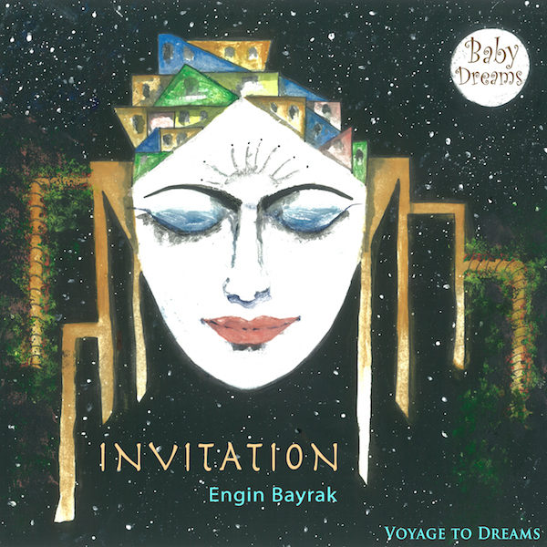
Voyage to Dreams — Rüyalara Yolculuk
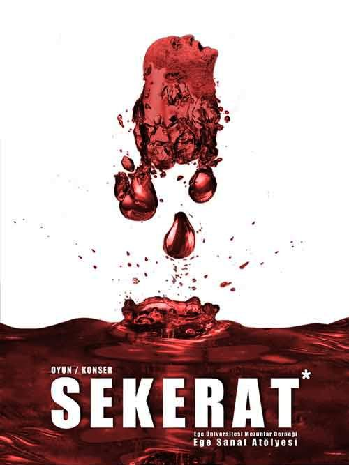
Sekerat
IT
In The Shade of Time
Sergi için soundtrack
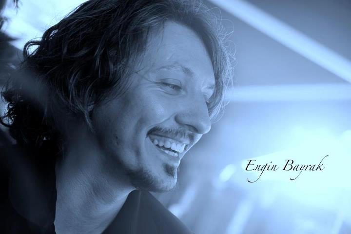
Moonlight
İngiltere · BRM Müzik
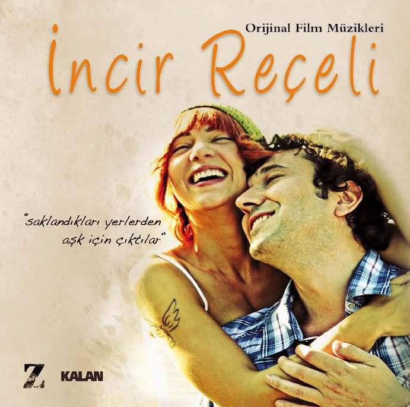
İncir Reçeli
Z-Kalan Müzik
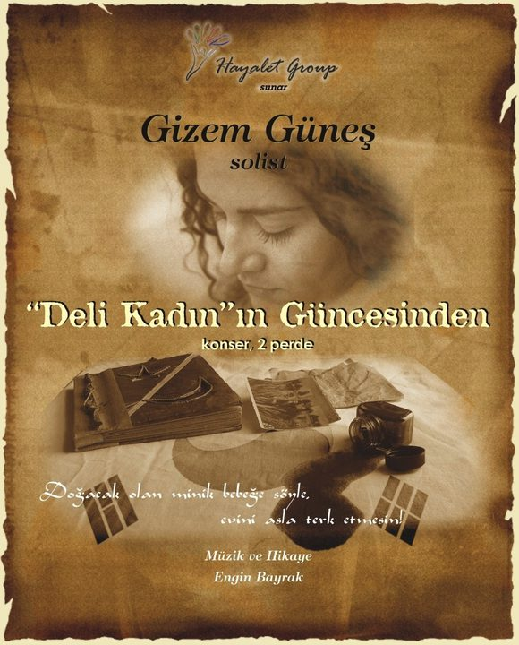
Deli Kadın'ın Güncesi'nden
ES
Electra Symphony
Japonya
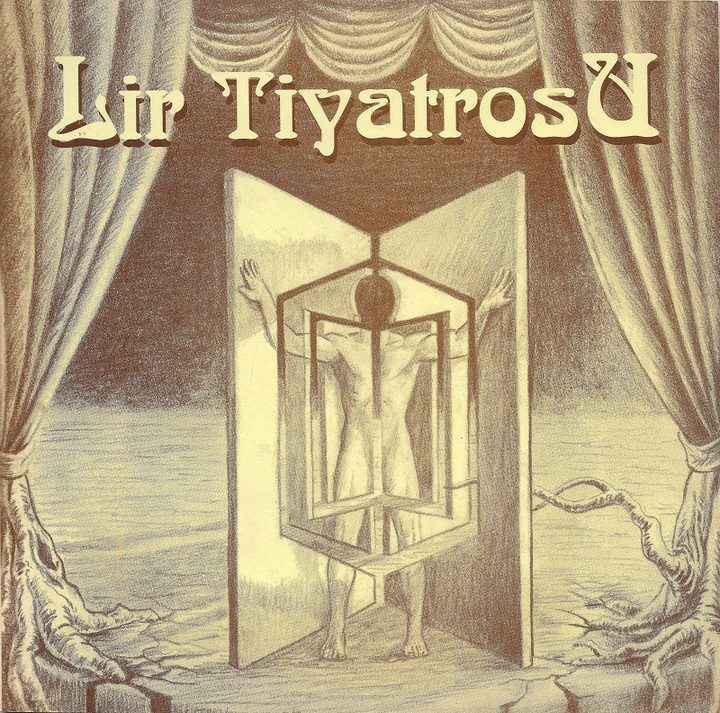
Lir Tiyatrosu
Sinema Filmleri — Uzun Metraj
6DV
Dünya Varmış
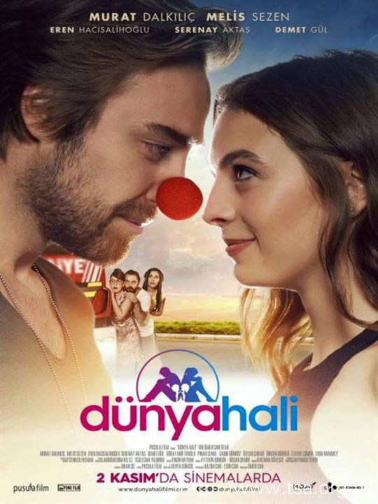
Dünya Hali
KP
Kan Parası
KM
Kiraz Mevsimi
TU
Toprağa Uzanan Eller
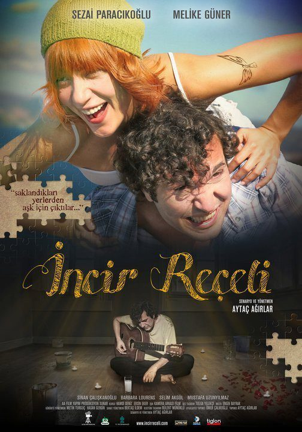
İncir Reçeli
Kısa Filmler
13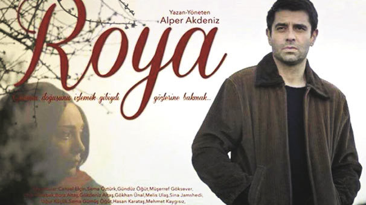
Roya
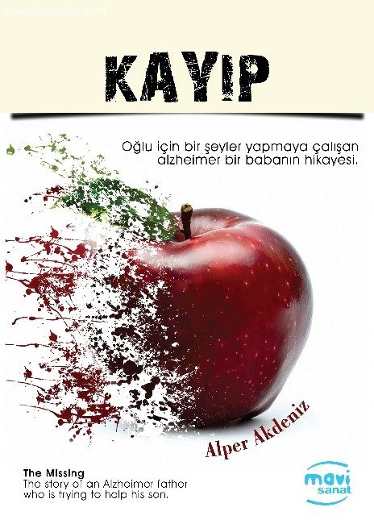
Kayıp
AK
Amok Koşucusu
L
Leke
MC
Mavi Ceket
I
Irz
KV
Keneler ve Karıncalar
Altın Koza — En İyi Deneysel Film
HD
Haydi Denize
DenizBank Yarışması — 2. Film Ödülü
UB
Uzaklarda Bir Yerde
Z
Zor
YS
Yıldızlar Sönerken
EH
Evdeki Hesap
İ
İd
Belgeseller
4MK
Mavi Kuşak
Iİ
Işığın İzinde
5 Bölüm
M
Misafir
K
Kopak
Diziler
1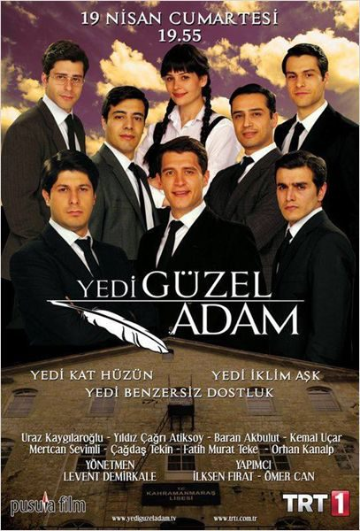
Yedi Güzel Adam
39 Bölüm
Reklam Filmleri
5PM
Park Mahal
D
Demor
P1
PTT 175. Yıl
MP
MM Proje
F
Fabrika
Katkı Sağladığı Albümler
2SA
Sır — Ayfer Vardar
“Ölmeyince Sakın Yardan Ayrılma”
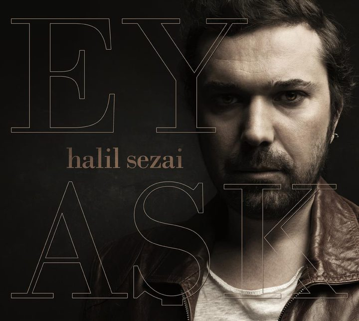
Ey Aşk — Halil Sezai
Devlet Tiyatrosu Oyunları
21ZL
Zambak Limanı
KM
Kuzu Maydanozun Maceraları
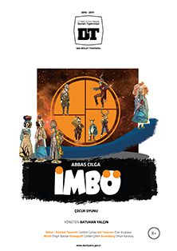
İmbö
S
Söylentiler
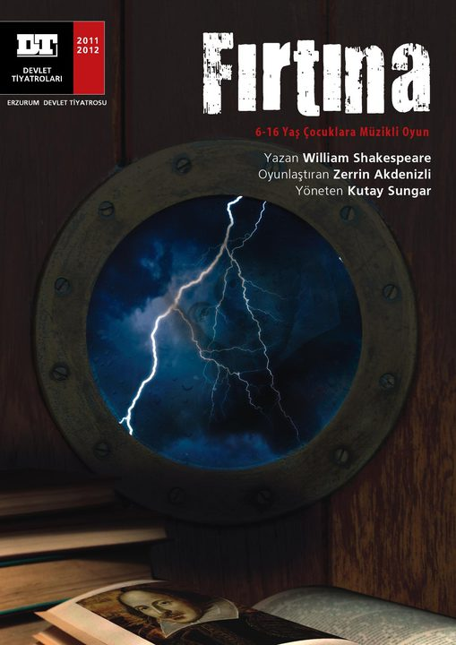
Fırtına
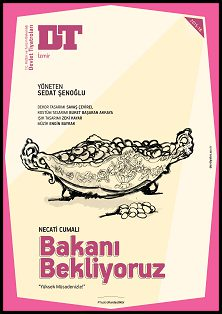
Bakanı Bekliyoruz
YG
Yarınlara Geç Kalmadan
FK
Fadik Kız
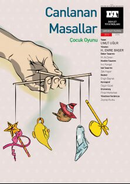
Canlanan Masallar
YT
Yürüyen Taşlar
BM
Bremen Mızıkacıları
KD
Kedigöz Danışman
HM
Herkes mi Hırsız
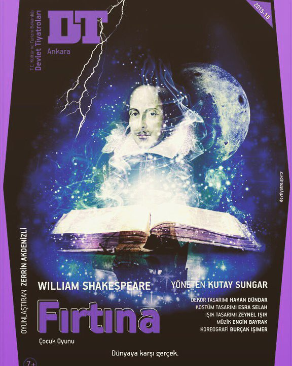
Fırtına
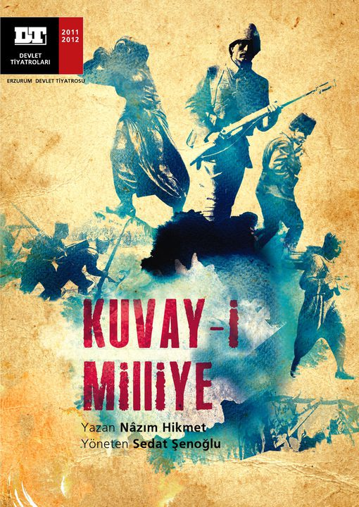
Kuvay-i Milliye
İK
İki Kova Su
BG
Benim Güzel Pabuçlarım
KK
Kader Kısmet Oyunu
İK
İstibdat Kumpanyası
ÇD
Çılgın Dünya
KT
Kafkas Tebeşir Dairesi
“2008'in En İyi Oyunu” Ödülü
Bağımsız & Üniversite Tiyatroları
19ZV
Zincire Vurulmuş Prometheus
BB
Bütün Bunlar Bize Özgü
KA
Küçük Altın Balık
SÇ
Sevgi Çemberi
BR
Bazen Rüya Bazen Gerçek
S
Sekerat
OÇ
Orman Çocuğu
KA
Küçük Adam Ne Oldu Sana
AK
Altın Küp
PP
Peter Pan
KY
Kral Yembe
BB
Bardakçı Baba
KT
Kafkas Tebeşir Dairesi
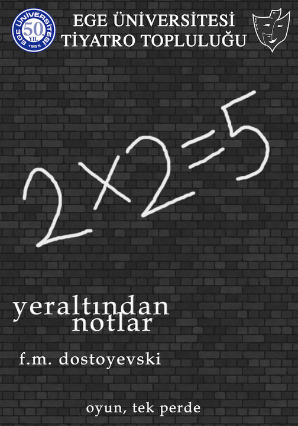
Yer Altından Notlar
MI
Manhattan'ın İyi Tanrısı
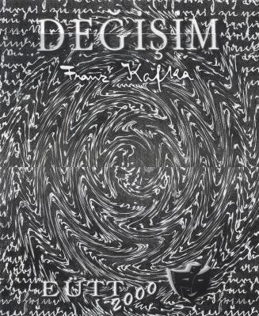
Değişim
GO
Gizli Oturum
Y
Yadahev
E